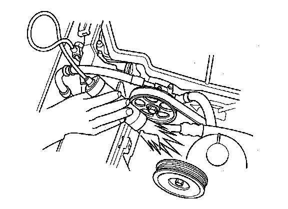
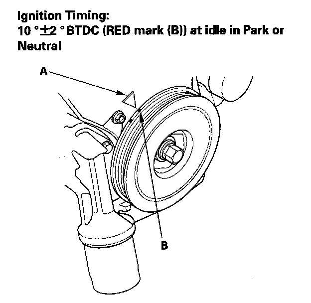

Ignition Timing: Testing and Inspection
Ignition Timing Inspection1. Connect the Honda Diagnostic System (HDS) to the data link connector (DLC)
2. Turn the ignition switch ON (II).
3. Make sure the HDS communicates with the vehicle and the powertrain control module (PCM). If it doesn't communicate, troubleshoot the DLC circuit.
4. Check for DTCs. If a DTC is present, diagnose and repair the cause before inspecting the ignition timing.
5. Start the engine. Hold the engine at 3,000 rpm with no load (in park or Neutral) until the radiator fan comes on, then let it idle.
6. Check the idle speed.
7. Jump the SCS line with the HDS.

8. Connect the timing light to the service loop.

9. Aim the light toward the pointer (A) on the timing belt cover. Check the ignition timing under a no load condition (headlights, blower fan, rear window defogger, and air conditioner are turned off).
10. If the ignition timing differs from the specification, check the cam timing. If the cam timing is OK, update the PCM if it does not have the latest software, or substitute a known-good PCM, then recheck. If the ignition system works properly, replace the original PCM.
11. Disconnect the HDS and the timing light.